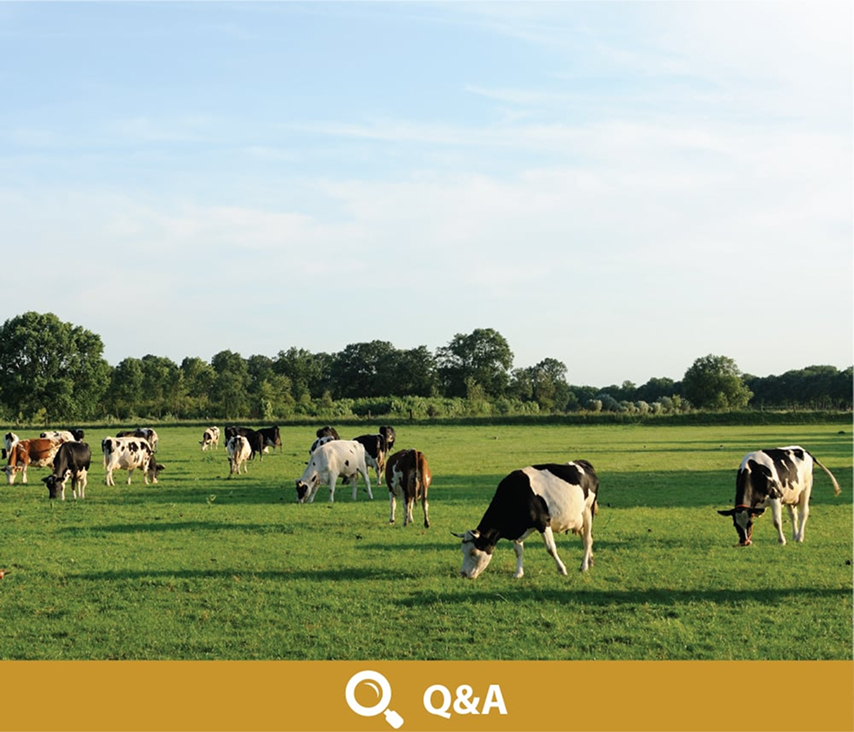

Quality
Cowala focuses on trusted sourcing, careful dairy selection and dependable nutrition support for families.
Our production and presentation standards are designed to reflect clean New Zealand dairy values and modern quality expectations.
- High standards of hygiene, safety and quality control.
- Ingredients checked and retested to meet a high standard.
- Products presented without artificial flavours, colours or preservatives.
Quality System
Careful sourcing, controlled production and clear information.
Q&A
Common product and nutrition questions for families.

Traceability
A simple product story supported by dairy care and quality expectations.